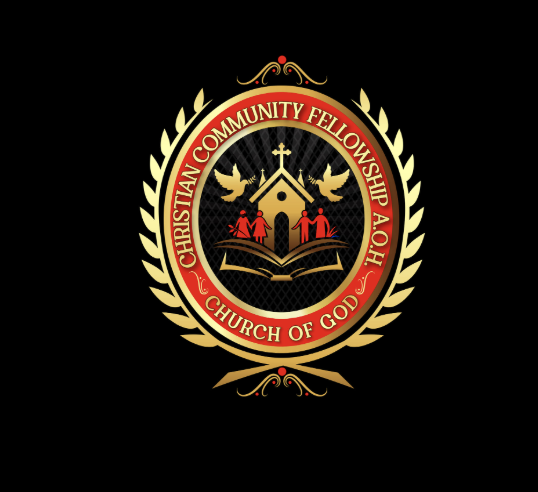

Pastor
Elder Dr. Leonard Bell II

District 4
Christian Community Fellowship
Christian Community Fellowship AOH Church of God
Join us for heartfelt worship, biblical teaching, and a welcoming church family led by Elder Dr. Leonard Bell II.
Pastor
Elder Dr. Leonard Bell II
Address
1208 Shady Grove Rd, Adamsville, AL 35005
Online
facebook.com/ccfaoh
About the church
Christian Community Fellowship AOH Church of God is a Christ-centered congregation committed to worship, discipleship, prayer, and service. We believe church should feel both sacred and welcoming, with room for families, visitors, and long-time members to grow together.
Whether you are looking for a church home, returning to fellowship, or joining online, you are invited to worship with us and connect with our community.
Our mission
We are committed to creating a church home where people can encounter God, be strengthened by biblical teaching, and grow in community with one another.
Every gathering is shaped around prayer, praise, and the preaching of the Word.
We want every visitor, member, and family to feel seen, welcomed, and supported.
Our goal is not attendance alone, but spiritual maturity and daily discipleship.
Fellowship and love
These photo highlights come directly from the church's Facebook page and show the spirit of fellowship, outreach, and youth engagement at Christian Community Fellowship.
Featured fellowship
Outreach
Next generation
Worship schedule
Sunday Worship
Come together for praise, preaching, and fellowship each Sunday afternoon.
Wednesday Night
Midweek connection and teaching are available online. Email the church to request the link.
Watch and connect
Follow the church on Facebook for updates, encouragement, and digital connection points.
Visit the Facebook pagePastoral leadership
Christian Community Fellowship is led with a focus on biblical teaching, strong community, and pastoral care that meets people where they are.
Contact the pastor's officeNext steps
Plan your visit
We would be glad to welcome you in person. If you are visiting for the first time, reach out before service and we will help you get connected.
Visitor FAQ
Christian Community Fellowship AOH Church of God is located at 1208 Shady Grove Rd, Adamsville, Alabama 35005.
Sunday worship begins at 1:30 PM. Wednesday night service is held at 7:30 PM via Zoom.
Email ccfaohmission@gmail.com to request the current access details.
You can call the church at (205) 567-0364 or send an email before your visit.
Connect
For service questions, Zoom access, or ministry information, use any of the contact options below.